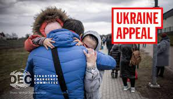
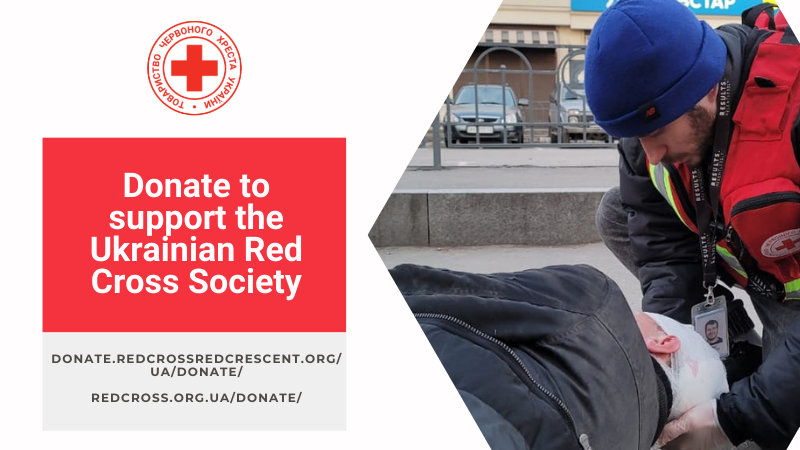
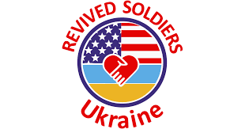
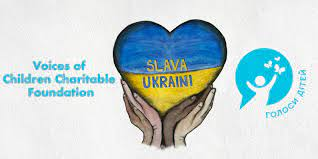
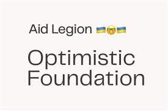

Disasters Emergency Committee (DEC)
Donations to the DEC helps fund 15 leading aid charities and their local partners in Ukraine and neighbouring countries to provide urgent relief and support to refugees and displaced nationals. So far, a huge £202 million has been raised, which will help provide food, water, shelter and medical assistance.

Red Cross - Ukraine
Working on the ground in Ukraine, the Red Cross are helping to distribute urgent aid and resources to those in need. They're asking for donations to help carry out their work, especially as they say "at any moment the situation may get worse, the consequences of which may be unpredictable."

Revived Soldiers Ukraine (RSU)
The nonprofit organisation helps funds medication and important supplies for army hospitals that are on the front line. The Revived Soldiers Ukraine(opens in new tab) website states they are "dedicated to providing aid to the people of Ukraine so that they may fulfill fundamental rights and freedoms such as right to life, right to appropriate and affordable medical care, freedom of belief and freedom for an adequate standard of living."

Voices of Children
This charitable Voices of Children foundation(opens in new tab) provides immediate aid to families affected by the invasion. It then additionally works with children to recover from the psychological traumas of war. Part of this includes art therapy and mobile pyschologists.

Kyiv School of Economics Appeal
The aim is to provide food supplies, transportation, refugees help for Ukrainian citizens affected by the war and purchase necessary medicines, first aid and protective kits for the State Emergency Service of Ukraine, Ukrainian Paramedic Association, and the Ukrainian Territorial Defense Forces to shield them against Russian aggression.

Aid Legion
Aid Legion are asking for generous donations to help both forces and civilians. In support of the Ukrainian Defenders, Aid Legion provides safety equipment, drones, bulletproof vests, first aid, cargo, etc. Whilst civil victims will be given medicine, food, water, housing, and evacuation help.
